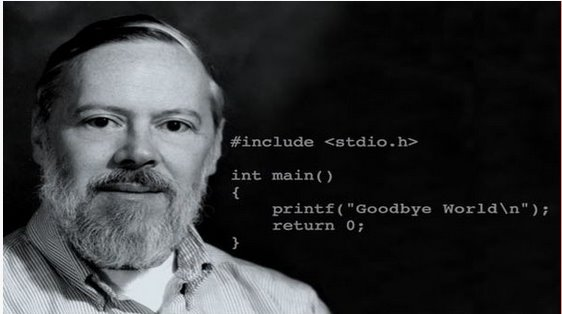

Los llamados programadores son aquellos que pueden crear y escribir programas de computadora. No importa qué tipo de programador sea uno, en mayor o menor medida, todos contribuyen con algo a nuestra sociedad. Sin embargo, las contribuciones de algunos programadores superan lo que una persona común podría aportar en toda su vida. Estos programadores son pioneros, respetados, y lo que han aportado ha cambiado todo el proceso de la civilización humana. A continuación, veamos los 12 programadores más grandes en la historia de la humanidad.
1. La primera programadora de computadoras: Ada Lovelace
Ada Lovelace, cuyo nombre original era Augusta Ada Byron, era hija del famoso poeta británico Lord Byron. Amante de las matemáticas, es reconocida por la posteridad como la primera programadora de computadoras.
Entre 1842 y 1843, Ada dedicó nueve meses a traducir el artículo del matemático italiano Luigi Menabrea sobre la máquina analítica de Charles Babbage. Tras la traducción, añadió numerosas notas que detallaban el método para calcular los números de Bernoulli con dicha máquina, considerándose el primer programa de computadora del mundo; por lo tanto, Ada también es considerada la primera programadora del mundo. Sin embargo, algunos biógrafos han cuestionado la originalidad de Ada en los programas, ya que parte de ellos fueron escritos por el propio Babbage.
Los artículos de Ada crearon muchas ideas nuevas que Babbage ni siquiera había mencionado, como cuando Ada predijo: "Esta máquina podría usarse en el futuro para composición tipográfica, composición musical o diversos usos más complejos."
En 1852, Ada, al tratar su cáncer de cuello uterino, murió de una hemorragia excesiva a la edad de solo 36 años. Cien años después de su muerte, en 1953, las notas que Ada había dejado sobre el "Esbozo de la máquina analítica" de Charles Babbage fueron publicadas nuevamente y se consideró que habían tenido una gran influencia en la informática moderna y la ingeniería de software.
2. El padre de Pascal: Niklaus Wirth
Niklaus Emil Wirth, nacido en Winterthur, Suiza, es un científico de la computación suizo.
De 1963 a 1967, fue profesor asistente en el Departamento de Ciencias de la Computación de la Universidad de Stanford, y luego ocupó el mismo puesto en la Universidad de Zúrich. En 1968, se convirtió en profesor de informática en el Instituto Federal de Tecnología de Zúrich (ETH Zúrich) y estudió durante dos años en el Centro de Investigación Xerox PARC.
Fue el diseñador principal de varios lenguajes de programación, incluidos Algol W, Modula, Pascal, Modula-2, Oberon, entre otros.
También es uno de los inventores del lenguaje Euler. En 1984 recibió el Premio Turing por el desarrollo de estos lenguajes. También fue un miembro importante del equipo de diseño y operación de la computadora Lilith y del sistema Oberon.
Su artículo "Program Development by Stepwise Refinement" se considera un clásico de la ingeniería de software. El título de uno de sus libros, "Algorithms + Data Structures = Programs", es una frase célebre en las ciencias de la computación.
3. Fundador de Microsoft: Bill Gates

William Henry "Bill" Gates III es un famoso empresario, inversor, ingeniero de software y filántropo estadounidense. En sus primeros años, junto con Paul Allen, fundó Microsoft. Fue presidente, director ejecutivo y arquitecto de software jefe de Microsoft, y poseía más del 8% de las acciones ordinarias de la empresa, siendo también el mayor accionista individual.
4. El padre de Java: James Gosling
James Gosling, nacido en Canadá, es un experto en software y uno de los cofundadores del lenguaje de programación Java. Generalmente se lo reconoce como el "padre de Java".
A los 12 años, ya podía diseñar consolas de videojuegos y ayudaba a los vecinos a reparar cosechadoras. Durante la universidad, trabajó como estudiante programador en el departamento de astronomía. En 1977, obtuvo su licenciatura en ciencias de la computación en la Universidad de Calgary, Canadá. En 1981, desarrolló Gosling Emacs, un editor de tipo Emacs que se ejecutaba en Unix (escrito en C, con Mocklisp como lenguaje de extensión). En 1983, obtuvo su doctorado en ciencias de la computación en la Universidad Carnegie Mellon, con la tesis titulada "The Algebraic Manipulation of Constraints". Después de graduarse, trabajó en IBM, donde diseñó el sistema NeWS para la primera estación de trabajo de IBM, pero no recibió mucha atención. Más tarde se trasladó a Sun Microsystems. En 1990, colaboró con Patrick Naughton y Mike Sheridan en el "Proyecto Green", que luego desarrolló un lenguaje llamado "Oak", renombrado posteriormente como Java. A finales de 1994, James Gosling presentó el programa Java en la conferencia "Tecnología, Educación y Diseño" celebrada en Silicon Valley. En el año 2000, Java se convirtió en el lenguaje de programación más popular del mundo.
5. El padre de Python: Guido van Rossum

Guido van Rossum es un programador de computadoras neerlandés, conocido por ser el autor del lenguaje de programación Python. En la comunidad de Python, se le considera el "dictador benévolo vitalicio (BDFL)", lo que significa que aún supervisa el proceso de desarrollo de Python y toma decisiones cuando es necesario.
En 2002, en la Conferencia Europea de Desarrolladores de Software Libre y de Código Abierto celebrada en Bruselas, Bélgica, Guido van Rossum recibió el Premio al Progreso del Software Libre 2001 otorgado por la Free Software Foundation. En mayo de 2003, Guido recibió el Premio del Grupo de Usuarios de UNIX de los Países Bajos. En 2006, fue reconocido como ingeniero distinguido por la Asociación de Maquinaria Computacional (ACM).
6. Creador de los lenguajes B y C y del sistema Unix: Ken Thompson
Kenneth Lane Thompson, apodado Ken Thompson, nació en Nueva Orleans, Estados Unidos. Es un académico de ciencias de la computación e ingeniero de software. Junto con Dennis Ritchie, diseñó los lenguajes B y C, creó los sistemas operativos Unix y Plan 9, y también es coautor del lenguaje de programación Go. Junto con Dennis Ritchie, fue galardonado con el Premio Turing en 1983.
Las contribuciones de Ken Thompson también incluyen el desarrollo de expresiones regulares, la escritura de los primeros editores de texto QED y ed, la definición de la codificación UTF-8 y el desarrollo del ajedrez por computadora.
7. Pionero de la informática moderna: Donald Knuth

Donald Ervin Knuth, nacido en Milwaukee, Estados Unidos, es un famoso científico de la computación y profesor emérito del Departamento de Informática de la Universidad de Stanford. El profesor Knuth es una figura pionera en la informática moderna, creador del campo del análisis de algoritmos, y ha realizado contribuciones fundamentales en varias ramas de las ciencias de la computación teórica. Ha publicado numerosos artículos y libros de gran influencia en los campos de la informática y las matemáticas. Fue galardonado con el Premio Turing en 1974.
Lo más conocido de Knuth es que es el autor de "El arte de programar computadoras" (The Art of Computer Programming). Este libro es una de las obras de referencia más respetadas en el campo de las ciencias de la computación. Además, es el inventor del software de composición tipográfica TeX y del sistema de diseño de fuentes Metafont. Propuso el concepto de programación literaria y creó los software WEB y CWEB como herramientas de desarrollo para la programación literaria.
8. Autor de "El lenguaje de programación C": Brian Kernighan

Brian Wilson Kernighan, nacido en Toronto, Canadá, es un científico de la computación canadiense que trabajó en los Laboratorios Bell y es profesor en la Universidad de Princeton. Participó en el desarrollo de Unix y es uno de los co-creadores de AMPL y AWK.
Después de coescribir con Dennis Ritchie el primer libro sobre C, "El lenguaje de programación C", su nombre comenzó a ser ampliamente conocido. También creó muchos programas para Unix, incluidos ditroff y cron en la Versión 7 de Unix.
9. El padre de Internet: Tim Berners-Lee
Sir Timothy John Berners-Lee, también conocido como Tim Berners-Lee, es un científico de la computación británico. Es el inventor de la World Wide Web y profesor en el Instituto de Tecnología de Massachusetts (MIT). El 25 de diciembre de 1990, junto con Robert Cailliau en el CERN, logró con éxito la primera comunicación entre un proxy HTTP y un servidor a través de Internet.
Berners-Lee es presidente del World Wide Web Consortium (W3C), organización que fundó para el desarrollo de la Web. También es fundador de la World Wide Web Foundation. Además, Berners-Lee es presidente fundador e investigador principal del Laboratorio de Ciencias de la Computación e Inteligencia Artificial del MIT. Al mismo tiempo, es director de la Iniciativa de Investigación en Ciencia Web. Por último, es miembro del consejo asesor del Centro de Inteligencia Colectiva del MIT.
En 2004, la Reina Isabel II del Reino Unido otorgó a Berners-Lee el título de Caballero Comendador de la Orden del Imperio Británico. En abril de 2009, fue elegido miembro extranjero de la Academia Nacional de Ciencias de los Estados Unidos. En la ceremonia de apertura de los Juegos Olímpicos de Verano de 2012, recibió el honor de ser llamado "inventor de la World Wide Web". El propio Berners-Lee participó en la ceremonia de apertura, trabajando frente a una computadora NeXT. Publicó un mensaje en Twitter: "Esto es para todos", y las luces de tubo LCD del estadio mostraron el texto de inmediato.
10. El padre de C++: Bjarne Stroustrup

Bjarne Stroustrup nació en el condado de Aarhus, Dinamarca. Es un científico de la computación y profesor principal de ciencias de la computación en la Facultad de Ingeniería de la Universidad Texas A&M. Es famoso por crear el lenguaje de programación C++, por lo que se le conoce como el "padre de C++".
En palabras del propio Stroustrup, él "inventó C++, escribió sus primeras definiciones e hizo la primera implementación... eligió y estableció los estándares de diseño de C++, diseñó el entorno de soporte auxiliar principal de C++, y se encargó de procesar las propuestas de extensión del comité de estándares de C++". También escribió *El lenguaje de programación C++*, que muchos consideran el clásico de referencia para C++. Actualmente se encuentra en su cuarta edición (publicada el 19 de mayo de 2013), y la versión más reciente incluye algunas de las nuevas características introducidas por C++11.
11. El padre de Linux: Linus Torvalds

Linus Benedict Torvalds nació en Helsinki, Finlandia, y tiene nacionalidad estadounidense. Fue el primer autor del núcleo de Linux y posteriormente inició este proyecto de código abierto, desempeñándose como arquitecto principal y coordinador del proyecto del núcleo de Linux. Es uno de los programadores y hackers de computadoras más famosos del mundo actual. También inició el proyecto de código abierto Git y es su principal desarrollador.
Linus también es conocido por su temperamento explosivo en las listas de correo en línea. Por ejemplo, una vez, al discutir con alguien sobre por qué Git no se desarrollaba en C++, ambos se insultaron mutuamente con "¡mierda!" (en el original, "bullshit"). Incluso se refirió al equipo de OpenBSD como "un grupo de monos masturbándose" (en el original, "OpenBSD crowd is a bunch of masturbating monkeys").
El 14 de junio de 2012, Torvalds, durante un evento organizado por la Universidad Aalto en Finlandia, calificó a Nvidia como "la peor empresa" (the worst company) y "el peor punto problemático" (the worst trouble spot) con la que había tratado, porque Nvidia no había lanzado ningún soporte oficial de Optimus para la plataforma Linux. Luego, Torvalds levantó el dedo medio frente a la cámara y dijo: "¡Nvidia, que te jodan!" (So, Nvidia, fuck you!).
12. El padre de C y Unix: Dennis Ritchie

Dennis MacAlistair Ritchie nació en Bronxville, Nueva York, EE. UU. Es un famoso científico de la computación estadounidense que hizo grandes contribuciones al desarrollo del lenguaje C y otros lenguajes de programación, así como a sistemas operativos como Multics y Unix. En discusiones técnicas, a menudo se le llama "dmr", que era su nombre de usuario en los Laboratorios Bell.
Dennis Ritchie y Ken Thompson desarrollaron juntos el lenguaje C y, posteriormente, con él crearon el sistema operativo Unix. Tanto C como Unix ocupan un lugar importante en la historia de la industria informática: C sigue siendo muy utilizado hoy en día para desarrollar software y sistemas operativos, y ha tenido una gran influencia en muchos lenguajes de programación modernos (como C++, C#, Objective-C, Java y JavaScript). En cuanto a los sistemas operativos, Unix también ha sido profundamente influyente. Hoy en día, muchos sistemas operativos en el mercado se derivan de Unix (como AIX y System V, entre otros), y también hay muchos sistemas (conocidos como sistemas similares a Unix) que han tomado prestadas las ideas de diseño de Unix (como Solaris, Mac OS X, BSD, Minix y Linux, entre otros). Incluso Microsoft, que compite con Unix con su sistema operativo Microsoft Windows, proporciona a sus usuarios y desarrolladores herramientas compatibles con Unix y un compilador de C.
Fuente: http://www.vaikan.com/12-greatest-programmers-of-all-time/
Haz clic para compartir notas
<p style="font-size:14px;">¡La nota debe ser una extensión del contenido de este artículo!</p><br> <p style="font-size:12px;"><a href="../tougao.html" target="_blank">Para enviar un artículo, haga clic aquí</a></p> <p style="font-size:14px;"><a href="./runoob-user-test-intro.html" target="_blank">Cómo obtener el código de invitación de registro</a></p> <h3 class="text-muted"><i class="fa fa-info-circle" aria-hidden="true"></i> Debe <a href=".." class="runoob-pop">iniciar sesión</a> antes de compartir notas.</h3> <p><a href="./runoob-user-test-intro.html" target="_blank">Cómo obtener el código de invitación de registro</a></p>